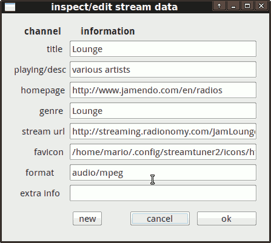

Edit
You probably won't need this often. But there's an ▸ Edit/Details context menu which brings up a station editor:

You can see the standard title and genre fields here. But also a few internally kept infos. For example the "url" field contains the actual pls/m3u/server address. While the "format" can list a non-standard audio compression type.
This dialog is primarily useful for your personal bookmarks. It allows to shorten or rename things. You can even use new to add new entries this way. (Which doesn't make sense in regular channel categories, because changes will be lost once you hit Reload). A proper "Add station..." dialog is planned though.